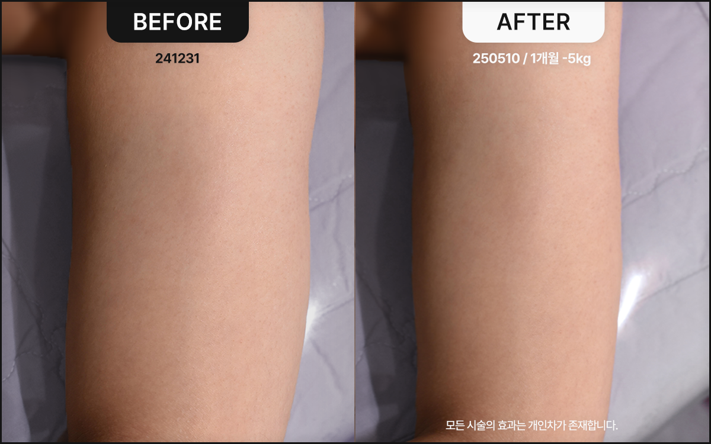
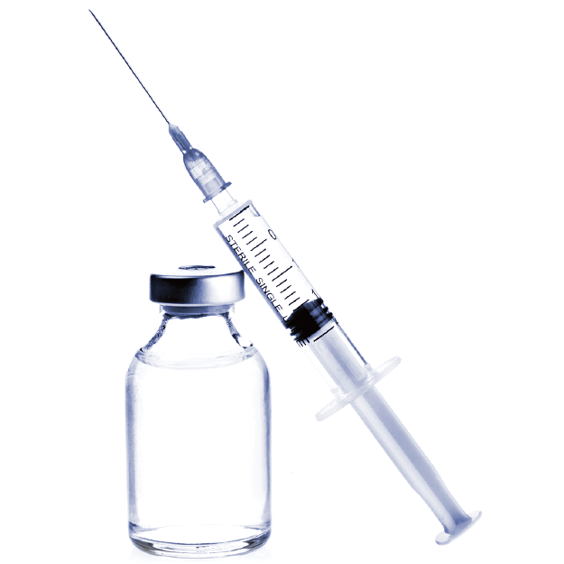
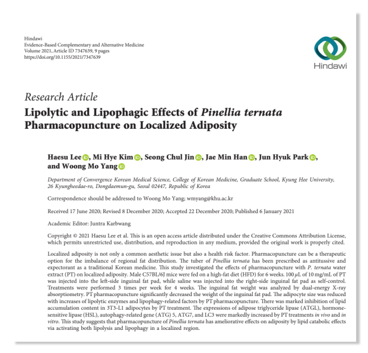
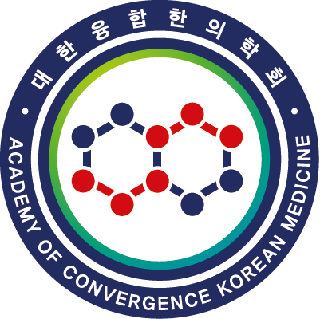
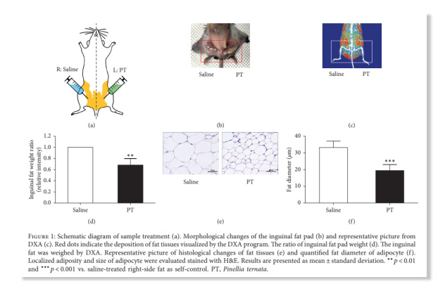

ボディラインコンタクターBody Line Contactor
運動では解決できないその部位のための
エンジュの葉と桑の葉（桑葉）、熊胆薬鍼などを主原料としたラインコンタクターで、 施術部位の脂肪細胞の代謝を活性化させ、サイズダウンをサポートします。 ほとんど腫れなし

ラインコンタクターとは？
どのように施術しますか？
ラインコンタクターは、従来の鍼治療と漢方治療を組み合わせて発展させた韓方治療法です。
漢方薬材の有効成分を抽出した薬液を、注射または特殊鍼を用いて皮下および脂肪層に注入します。
施術方法が簡単で、従来の薬物注射に比べてあざや腫れが少なく、すぐに日常生活が可能です。
メディカルブルーム韓方クリニックで、早く健康的な美しさに出会ってください。
ステロイド不使用の天然漢方成分 脂肪細胞の容積減少 麻酔・ダウンタイム不要のスピーディーで簡単な施術 あざ・腫れなくすぐに日常生活が可能
メディカルブルーム独自のラインコンタクターは、
部分痩身に特化した天然由来の原料で構成されています。
脂肪分解のための最適な組み合わせ 特許出願を完了した 複合抽出物素材による実証済みの脂肪分解効果、 最高のシナジー効果を生み出す薬物の組み合わせで 構成されています。
早くて簡単なボディケア 腹部、太もも、二の腕、脇腹の脂肪など 集中施術が必要な部位に 週1-2回の手軽な注射施術で 早い効果が得られます。
副作用のない天然生薬成分 脂肪吸引では傷跡や壊死、 皮膚のたるみなどの副作用がよく起こります。
ラインコンタクターは天然生薬成分のため、副作用なく 自然に、効果的に体脂肪を減少させます。

ケアしたい局所の脂肪部位に
天然由来の薬物を投与し、脂肪細胞のサイズを縮小
STEP 2 エネルギー代謝の調節により、肥満の 主要因である糖の合成を抑制 STEP 3 脂肪分解酵素の分泌促進により 局所部位の脂肪を分解


慶熙大学校・大韓融合韓医学会と共同開発、
国際的な著名学会誌への論文発表で
脂肪分解効果を科学的に立証した メディカルブルーム ラインコンタクター

論文と学会誌が立証する
ボディラインコンタクターの効果
局所脂肪の体積減少率 23% 脂肪分解酵素の発現増加率 3.2倍 脂肪細胞サイズの減少率 48% 脂肪細胞分化の抑制率 65%
メディカルブルーム ラインコンタクター
主要成分
蒲公英（タンポポ） エネルギー代謝を調節し、 脂肪酸の合成を抑制 半夏 脂肪酸の分解を促進し、 肥満治療に効果的 黄耆 脂肪細胞の蓄積を防ぎ、 老廃物と毒素の排出でむくみを軽減 槐葉（エンジュの葉） 体脂肪分解、脳神経再生、 関節炎症の改善 熊胆薬鍼 脂肪細胞の分化能力を抑制し、 脂肪の蓄積を防止
特に気になる二の腕、脇腹、太もも
メディカルブルームのボディラインコンタクタープログラムで解決しましょう。
ボディラインコンタクターがおすすめの方
脂肪吸引施術の副作用が
不安な方 自然で持続期間の長い ボディラインを望む方 二の腕など局所的な部位の脂肪を すっきりさせたい方
最も健康的な美しさをお届けする
メディカルブルーム韓方クリニックの約束
1:1肌コンディション＆デザインカウンセリング
院長との十分なカウンセリングを通じて、お悩みの部位や肌のコンディション、肌質を丁寧にチェックします。 お客様が求める美しさとお顔の状態をすべて考慮し、最適なパーソナルフェイスデザインをご提案いたします。
韓方医院長2人による
特別な専任ケア
カウンセリングから施術まで、家族や大切な人の肌だと思い、誰よりも丁寧できめ細やかにケアします。 肌の美容に韓方医学の視点を取り入れ、血脈と筋肉への刺激を加えることで、健康と美しさの両方を実現します。
副作用のない健康的な美しさ
お客様の肌の健康と満足度を何よりも大切にしています。 施術後のつらい副作用が起きないよう、検査とカウンセリングの段階に万全を期し、薬鍼と韓方薬の原料には体にやさしい天然韓方生薬のみを使用しています。
正規プレミアム機器と
適正量の施術
メディカルブルームがお客様に使用する機器と薬剤はすべて正規品で、お顔に多すぎず少なすぎない、オーダーメイドの適正量のみで施術いたします。
Medical Bloom Korean Medicine Clinic